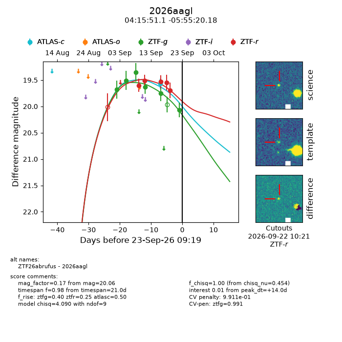
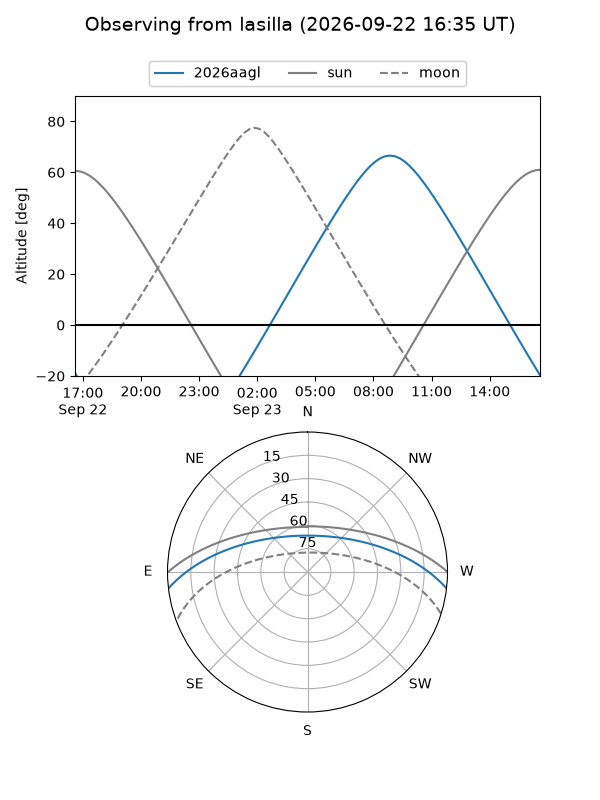
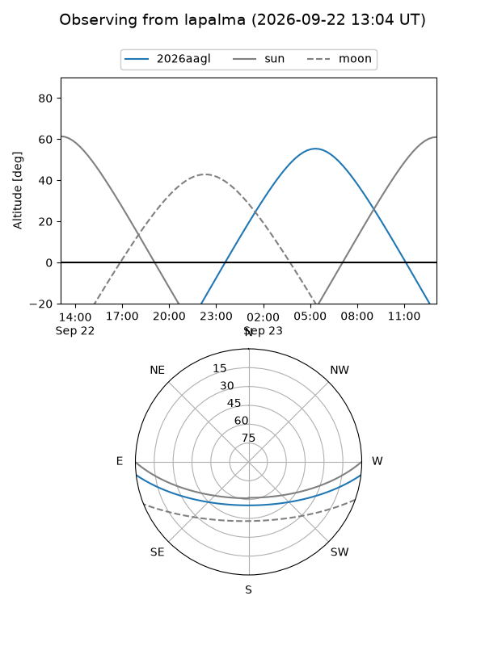
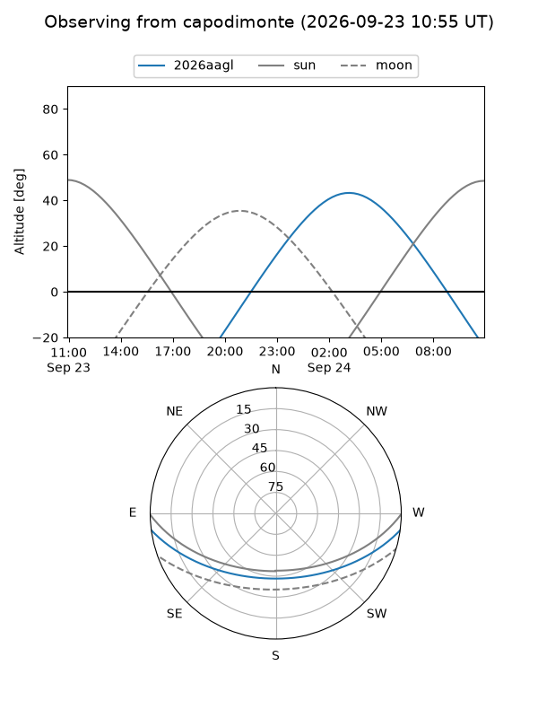
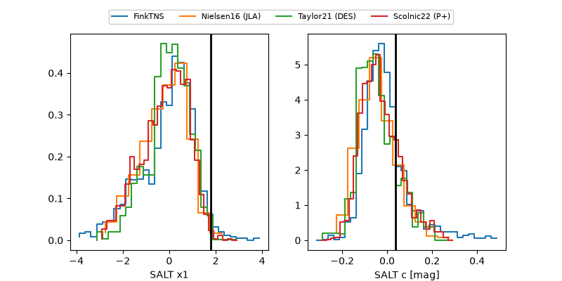

2026aagl
Target 2026aagl at 2026-09-23 09:21
Aliases and brokers:
FINK-ZTF: ztf.fink-portal.org/ZTF26abrufus
Lasair-ZTF: lasair-ztf.lsst.ac.uk/objects/ZTF26abrufus
ALeRCE-ZTF: alerce.online/object/ZTF26abrufus
YSE-PZ: ziggy.ucolick.org/yse/transient_detail/2026aagl
TNS name: wis-tns.org/object/2026aagl
Direct TNS query: direct search
alt names
ZTF26abrufus (ztf,fink_ztf)
2026aagl (tns,yse)
Coordinates:
equatorial (ra, dec) = 63.9630,-5.92227
equatorial (HMS+DMS) = 04:15:51.11,-05:55:20.18
galactic (l, b) = (198.9353,-37.07810)
Flags:
TNS type: nan
peak dt: +14.0
Photometry:
last atlasc=19.57, ztfg=20.06, ztfr=19.70
1 atlasc, 6 ztfg, 5 ztfr detections
Lightcurve

Visibility



Additional plots
